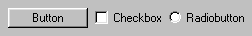

Hilfe

Parameter
| text$ | Textbezeichnung, die im Button erscheinen soll |
| x | Koordinate X |
| y | Koordinate Y |
| breite | Breite in Pixel |
| hoehe | Höhe in Pixel |
| gruppe | Identität einer Gruppe |
| style |
1 - Button (Standard)
2 - Checkbox 3 - Radiobutton 4 - ENTER-Taste 5 - ESC-Taste +65536 - Objekt fixieren |
Rückgabewert
Identität des Button-Objekts wird zurückgeliefert
Beschreibung
Die Funktion CreateButton erstellt einen Button mit einem Text. Gebe dazu die Startkoordinate X/Y und Breite/Höhe an. Gruppe ist die Identität von Window, Panel, Tabber oder Canvas. Mit dieser Funktion lassen sich normale Buttons (Style 1) aber auch Checkboxen (Style 2) oder Radiobuttons (Style 3) erstellen. Wird der Style auf 4 oder 5 gesetzt sendet der Button immer ein Event, sobald innerhalb des Parents (empfehlenswert ist ein Panel) die ENTER bzw. ESC-Taste gedrückt wird. Dies ist besonders hilfreich, da bei GUI-Anwendungen KeyHit -Abfragen wirkungslos sind.
-Abfragen wirkungslos sind.
Der Status kann mit ButtonState abgefragt und mit SetButtonState gesetzt werden (für Style 2 oder 3). Mit SetGadgetText kann man später den Text ändern.

und füge Radiobuttons hinzu - dadurch werden die Radiobuttons getrennt.Beispiel
Erstellt Button, Checkbox und Radiobutton:
button1 = CreateButton("Button", 20, 20, 100, 30, window, 1)
button2 = CreateButton("Checkbox", 20, 60, 100, 30, window, 2)
button3 = CreateButton("Radiobutton", 20, 100, 100, 30, window, 3)
WaitKey()
End
Siehe auch